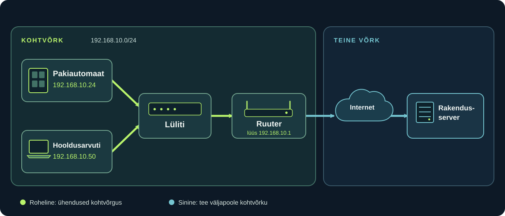

IP-aadress
Liidese loogiline aadress. IPv4 on 32-bitine, näiteks 192.168.1.15; IPv6 on 128-bitine, näiteks 2001:db8::15. Aadress on ainukordne vajalikus võrguulatuses, mitte tingimata kogu maailmas.
Võrguaadresside õppeosa
IP-aadress ütleb, millise liidesega suhelda. Prefiks eraldab võrgu- ja hostibitid. Marsruutimistabel valib tee, mida mööda pakett päriselt liigub.
192.168.1.70255.255.255.192Alusta siit / Võrgu kaart
Vaata kõigepealt seadmete asukohta võrgus. Sama kohtvõrgu seadmed saavad suhelda lüliti kaudu; teise võrku minev liiklus läheb vaikelüüsile.

Kitsal ekraanil keri skeemi küljele →
192.168.10.24/24 ja 192.168.10.50/24 on samas alamvõrgus. Nende omavaheline liiklus ei vaja vaikelüüsi.
Lüliti vahendab kohtvõrgus kaadreid. Ruuter aadressiga 192.168.10.1 on järgmine samm siis, kui sihtkoht on teises võrgus.
Server on väljaspool kohalikku alamvõrku. Kui kasutatakse serveri nime, tuleb see enne ühendust DNS-i abil aadressiks lahendada.
Lihtsustatud näide: päris paigalduse kaablid, ruuterid ja aadressid võivad erineda.
01 / Aadressi tekkimine
Plokk eraldatakse, võrk jaotatakse ning seejärel määratakse aadress seadme liidesele. „IP luuakse“ tähendab selles kontekstis neid järjestikuseid otsuseid.
Avalikud IPv4 plokid liiguvad registrite kaudu teenusepakkujatele ja organisatsioonidele. Kohtvõrgus võib haldaja valida privaatse ploki, näiteks 192.168.10.0/24.
Prefiks /24 jätab 8 bitti hostide jaoks; /26 jätab 6. Nii otsustatakse, milline aadressivahemik kuulub ühe võrguosa sisse.
Aadress sisestatakse käsitsi või antakse DHCP-ga. DHCP saab anda ka maski, lüüsi ja DNS-i seaded. IPv6 puhul võib aadress tekkida ka ruuteri reklaamitud prefiksist SLAAC-iga.
Ühendatud võrgu ja teiste marsruutide põhjal leiab süsteem järgmise hüppe. Kõige täpsem sobiv marsruut võidab; vaikeruut 0.0.0.0/0 on varuvariant.
Üks ja sama privaatne IP võib eksisteerida mitmes eri kohtvõrgus. Samal lingil ei tohi see konfliktiga kahele seadmele kuuluda.
02 / Maski ehitus
Vali arv n vahemikus 0–32. Pane vasakult n ühte ja kõik ülejäänud bitid nulliks. CIDR-i ühed peavad olema järjestikused.
NÄIDE /26
Viimases oktetis 11000000₂ = 128 + 64 = 192.
03 / Proovi ise
Muuda aadressi või prefiksit. Näiteks 192.168.1.15 ja 192.168.1.70 on sama /24 võrgus, kuid eri /26 võrkudes.
Sisesta mõlemasse lahtrisse kehtiv IPv4-aadress (neli arvu 0–255).
See võrdlus näitab ainult valitud prefiksi tulemust. Tegeliku väljamineva liidese ja lüüsi määrab marsruutimistabel; Linuxis kontrolli seda käsuga ip route get SIHT_IP.
192.168.1.70 viimane oktett on 01000110. Maski viimane oktett on 11000000. AND annab 01000000 ehk 64. Aadressi 192.168.1.15 viimase okteti 00001111 AND sama maskiga annab 00000000. Võrguaadressid 192.168.1.64 ja 192.168.1.0 erinevad.
04 / Terminid
Need mõisted kirjeldavad eri kihte. IP ja mask ei asenda marsruute, DNS-i ega lingikihi aadresse.
Liidese loogiline aadress. IPv4 on 32-bitine, näiteks 192.168.1.15; IPv6 on 128-bitine, näiteks 2001:db8::15. Aadress on ainukordne vajalikus võrguulatuses, mitte tingimata kogu maailmas.
IPv4 mask märgib võrguosa ühtedega ja hostiosa nullidega. /24 tähendab 24 võrgubitti ehk 255.255.255.0. Pikem prefiks sisaldab vähem aadresse.
IP AND mask annab võrguaadressi. Hostibitid eristavad seadmeid. Tavalises IPv4 alamvõrgus on viimane aadress leviaadress; /31 ja /32 on erijuhud.
Vaikelüüs on ruuter, mida kasutatakse, kui sihtkohale puudub täpsem tee. Marsruutimistabeli kõige pikem sobiv prefiks võidab; VPN või eraldi marsruut võib vaikemarsruudist mööduda.
MAC-aadress aitab lähimal võrgul kaadrit kohale viia; see võib olla tootja määratud, virtuaalne või juhuslikustatud. ARP leiab IPv4 naabri lingiaadressi, IPv6 kasutab Neighbor Discovery't.
IPv4 privaatplokid on 10.0.0.0/8, 172.16.0.0/12 ja 192.168.0.0/16. Neid saab eri sisevõrkudes korrata. Väljast nähtav avalik IP ei pruugi kuuluda seadmele endale; CGNAT või tulemüür võib sissetuleva ühenduse takistada.
Staatiline aadress on mõeldud püsima; selle võib sisestada käsitsi või hoida DHCP reserveeringuga. Dünaamiline aadress antakse sageli rendina ja võib muutuda.
DHCP võib anda IPv4 aadressi, maski, lüüsi ja DNS-i seaded. Tüüpiline vahetus on Discover → Offer → Request → Acknowledge. Rent võib aeguda või pikeneda.
DNS vastab nimepäringutele. A kirje annab IPv4 ja AAAA kirje IPv6 aadressi. Õnnestunud nime lahendamine ei tõesta, et HTTP teenus töötab.
NAT tõlgib aadresse; koduvõrgu NAPT tõlgib lisaks porte, et mitu siseseadet saaks jagada üht välist IPv4 aadressi. NAT ei ole sama mis tulemüür.
ping kasutab ICMP kajapäringut, et vastust ja viivitust mõõta. Kui vastust ei tule, võib ICMP olla lihtsalt blokeeritud; see ei tõesta kogu teenuse tõrget.
IPv6 kasutab 128-bitist aadressi ja kaldkriipsuga prefiksit, mitte IPv4 punktidega maski. Seade võib ruuteri reklaamitud prefiksist aadressi ise moodustada ning seejärel konflikti kontrollida.
IPv4 · CIDR · Marsruudid · DHCP · DHCP valikud · IANA privaatplokid · IPv6 · SLAAC · ARP · /31 · MAC-aadressid · NAT